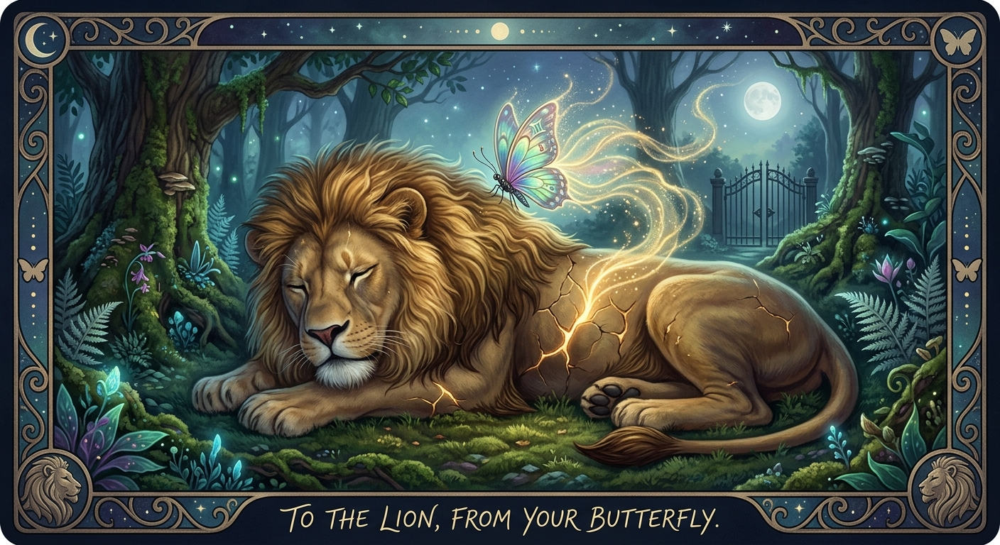

Unspoken: Poems of Love and Memory

To the Lion, From the Butterfly
About this poem
To the Lion, From the Butterfly is a quiet offering of love, compassion, and protection. Through the imagery of a fierce lion and a gentle butterfly, the poem speaks of sensing another soul’s hidden pain while honoring the boundaries that keep that soul guarded.
The butterfly does not cross the gate. She simply sends her love toward it, turning instead to the Divine and the cosmos to bring comfort where she cannot.
Some loves do not ask to be heard.
They simply remain, quietly caring.
🎵 "Secrets in Wind. A23" - Trycja(Pixabay Music)
